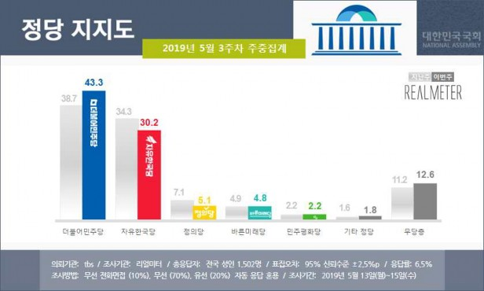
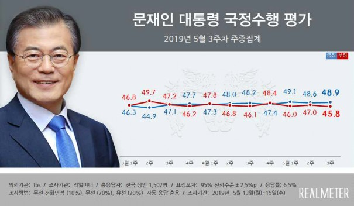

리얼미터 주중집계
2019년 5월 3주차 (13~15일)
2019. 5. 15
제1장
조 사 개 요
◈ 조사 설계
조사의뢰자
tbs
조사기관
(주)리얼미터
조사지역·대상 및 표본크기
전국 만 19세 이상 남녀 1,502명
조사일시
2019년 5월 13일(월) ~ 15일(수) (3일간)
조사방법
무선 전화면접(10%), 무선(70%)·유선(20%) 자동응답 혼용
표본오차
95%신뢰수준 ±2.5%p
응 답 률
6.5% (총 통화 23,042명 중 1,502명 응답 완료)
응답률 제고 목적 표집틀 확정 후 미수신 조사대상 3회 콜백
표집방법
무선(80%)·유선(20%) 병행 무작위생성 표집틀을 통한 임의 전화걸기
가중값 산출 및 적용방법
성, 연령, 권역별 가중 부여 (2019년 1월말 행정안전부 주민등록 인구 기준), [ 림가중 ]
◈ 응답자 특성
구 분 | 조사완료 | 목표할당 | 가중값 배율 | |||||
사례수(명) | 비율(%) | 사례수(명) | 비율(%) | |||||
◈ 전 | 체 ◈ | 1502 | 100.0 | 1500 | 100.0 | 1.00 | ||
▣ 성 ▣ | 남 | 자 | 1039 | 69.2 | 744 | 49.6 | 0.72 | |
여 | 자 | 463 | 30.8 | 756 | 50.4 | 1.63 | ||
▣연령▣ | 만 2 | 1 9 세 이 9 세 이 | 상 하 | 167 | 11.1 | 258 | 17.2 | 1.54 |
3 | 0 | 대 | 222 | 14.8 | 252 | 16.8 | 1.14 | |
4 | 0 | 대 | 304 | 20.2 | 297 | 19.8 | 0.98 | |
5 | 0 | 대 | 387 | 25.8 | 300 | 20.0 | 0.78 | |
6 | 0 세 이 | 상 | 422 | 28.1 | 393 | 26.2 | 0.93 | |
▣지역▣ | 서 | 울 | 394 | 26.2 | 291 | 19.4 | 0.74 | |
경 | 기 / 인 | 천 | 428 | 28.5 | 456 | 30.4 | 1.07 | |
대전/충청/세종 | 139 | 9.3 | 159 | 10.6 | 1.14 | |||
강 | 원 | 49 | 3.3 | 45 | 3.0 | 0.92 | ||
부산/경남/울산 | 212 | 14.1 | 231 | 15.4 | 1.09 | |||
대 | 구 / 경 | 북 | 123 | 8.2 | 150 | 10.0 | 1.22 | |
광 | 주 / 전 | 라 | 133 | 8.9 | 150 | 10.0 | 1.13 | |
제 | 주 | 24 | 1.6 | 18 | 1.2 | 0.75 | ||
제2장
조 사 결 과
◈ 정당 지지도

문1. 선생님께서는 다음 중 어느 정당을 지지하거나 약간이라도 더 호감을 가지고 계십니까? 호명은 무작위 방식입니다. (선택지 1~5번 무작위 배열)
+--------------------+-----------------+--------+--------+--------+--------+--------+--------+--------+--------+--------+--------+
| | 사례수 | 민주당 | 자유 | 바른 | 민주 | 정의당 | 기타 | 없음 | 모름/ | 무당층 | 계 |
| | | | 한국당 | 미래당 | 평화당 | | 정당 | | 무응답 | | |
| +--------+--------+--------+--------+--------+--------+--------+--------+--------+--------+--------+--------+
| |조사완료|목표할당| % | % | % | % | % | % | % | % | % | % |
+--------------------+--------+--------+--------+--------+--------+--------+--------+--------+--------+--------+--------+--------+
|■ 전 체 ■| (1502) | (1500) | 43.3 | 30.2 | 4.8 | 2.2 | 5.1 | 1.8 | 10.8 | 1.8 | 12.6 | 100.0 |
+--------------------+--------+--------+--------+--------+--------+--------+--------+--------+--------+--------+--------+--------+
|▣ | 지 역1 | ▣| | | | | | | | | | | | | | | | | | | | | | | | | | |||
| | 서 울 | | | (394) | | (291) | | 41.7 | | 30.4 | | 7.0 | | | 2.1 | | 4.7 | | 2.0 | | | 10.8 | | 1.3 | | 12.1 | | 100.0 | | |
| | 경 기/ 인 천 | | | (428) | | (456) | | 45.9 | | 28.4 | | 3.8 | | | 2.3 | | 5.0 | | 1.3 | | | 12.1 | | 1.2 | | 13.3 | | 100.0 | | |
| | 대전/세종/충청 | | | (139) | | (159) | | 38.5 | | 30.5 | | 4.3 | | | .7 | | 6.8 | | 2.5 | | | 15.2 | | 1.5 | | 16.7 | | 100.0 | | |
| | 강 원 | | | (49) | | (45) | | 32.8 | | 34.5 | | 3.8 | | | .0 | | 2.2 | | .0 | | | 16.4 | | 10.3 | | 26.7 | | 100.0 | | |
| | 부산/울산/경남 | | | (212) | | (231) | | 35.1 | | 39.1 | | 5.3 | | | .3 | | 7.4 | | 3.1 | | | 8.0 | | 1.7 | | 9.7 | | 100.0 | | |
| | 대 구/ 경 북 | | | (123) | | (150) | | 34.5 | | 39.9 | | 4.5 | | | 4.4 | | 4.0 | | 1.5 | | | 9.7 | | 1.4 | | 11.2 | | 100.0 | | |
| | 광 주/ 전 라 | | | (133) | | (150) | | 69.4 | | 9.9 | | 4.1 | | | 4.5 | | 2.6 | | 1.1 | | | 4.5 | | 3.9 | | 8.4 | | 100.0 | | |
| | 제 주 | | | (24) | | (18) | | 36.6 | | 34.1 | | .0 | | | 5.4 | | 2.1 | | .0 | | | 21.8 | | .0 | | 21.8 | | 100.0 | | |
+--------------------+--------+--------+--------+--------+--------+--------+--------+--------+--------+--------+--------+--------+
|▣ 지 역2 ▣| | | | | | | | | | | | |
| 수 도 권 | (822) | (747) | 44.2 | 29.2 | 5.0 | 2.2 | 4.9 | 1.6 | 11.6 | 1.2 | 12.8 | 100.0 |
+--------------------+--------+--------+--------+--------+--------+--------+--------+--------+--------+--------+--------+--------+
|▣ 성 | 별 ▣| | | | | | | | | | | | | | | | | | | | | | | | |
| 남 | 자 | (1039) | | (744) | | 38.7 | | 34.2 | | 4.5 | | 2.4 | | 5.9 | | 2.6 | | 9.9 | | 1.8 | | 11.7 | 100.0 | | |
| 여 | 자 | (463) | | (756) | | 47.9 | | 26.4 | | 5.0 | | 2.0 | | 4.2 | | 1.0 | | 11.7 | | 1.9 | | 13.6 | 100.0 | | |
+--------------------+--------+--------+--------+--------+--------+--------+--------+--------+--------+--------+--------+--------+
+--------------------+-----------------+--------+--------+--------+--------+--------+--------+--------+--------+--------+--------+
| | 사례수 | 민주당 | 자유 | 바른 | 민주 | 정의당 | 기타 | 없음 | 모름/ | 무당층 | 계 |
| | | | 한국당 | 미래당 | 평화당 | | 정당 | | 무응답 | | |
| +--------+--------+--------+--------+--------+--------+--------+--------+--------+--------+--------+--------+
| |조사완료|목표할당| % | % | % | % | % | % | % | % | % | % |
+--------------------+--------+--------+--------+--------+--------+--------+--------+--------+--------+--------+--------+--------+
|■ 전 체 ■| (1502) | (1500) | 43.3 | 30.2 | 4.8 | 2.2 | 5.1 | 1.8 | 10.8 | 1.8 | 12.6 | 100.0 |
+--------------------+--------+--------+--------+--------+--------+--------+--------+--------+--------+--------+--------+--------+
|▣ | 연 | 령 | ▣| | | | | | | | | | | | | | | | | | | | | | | | | | |||
| | 1 9 | ~ 29 세 | | | (167) | | (258) | | 46.4 | | 21.0 | | 8.0 | | | .0 | | 5.0 | | .5 | | | 17.6 | | 1.4 | | 19.0 | | 100.0 | | |
| | 3 0 | 대 | | | (222) | | (252) | | 53.7 | | 21.5 | | 4.3 | | | 2.1 | | 3.4 | | 2.5 | | | 10.8 | | 1.6 | | 12.4 | | 100.0 | | |
| | 4 0 | 대 | | | (304) | | (297) | | 52.1 | | 20.6 | | 5.3 | | | 2.5 | | 6.7 | | 2.1 | | | 8.5 | | 2.2 | | 10.7 | | 100.0 | | |
| | 5 0 | 대 | | | (387) | | (300) | | 40.2 | | 33.8 | | 3.7 | | | 3.1 | | 8.4 | | .5 | | | 9.4 | | .8 | | 10.2 | | 100.0 | | |
| | 6 0 세 | 이 상 | | | (422) | | (393) | | 30.4 | | 46.4 | | 3.3 | | | 2.7 | | 2.3 | | 2.9 | | | 9.1 | | 2.9 | | 12.0 | | 100.0 | | |
+--------------------+--------+--------+--------+--------+--------+--------+--------+--------+--------+--------+--------+--------+
|▣ 국 정 평 가 ▣| | | | | | | | | | | | |
| | 매 우 잘 한 다 | | | (381) | | (393) | | 84.8 | | | 2.1 | | | 2.2 | | | 2.9 | | | 3.7 | | | 1.6 | | | 1.6 | | | 1.1 | | | 2.7 | | 100.0 | | | |||
| | 잘 하 는 편 | | | (333) | | (340) | | 69.1 | | | 2.5 | | | 4.7 | | | 3.4 | | | 10.4 | | | 1.0 | | | 7.2 | | | 1.8 | | | 8.9 | | 100.0 | | | |||
| | 잘 못 하 는 편 | | | (236) | | (239) | | 16.7 | | | 46.9 | | | 6.3 | | | 1.3 | | | 4.3 | | | .6 | | | 22.2 | | | 1.6 | | | 23.8 | | 100.0 | | | |||
| | 매 우 잘 못 함 | | | (484) | | (447) | | 4.3 | | | 71.2 | | | 4.8 | | | .8 | | | 2.7 | | | 2.9 | | | 11.7 | | | 1.6 | | | 13.3 | | 100.0 | | | |||
| | 잘 한 다 | | | (714) | | (733) | | 77.5 | | | 2.3 | | | 3.3 | | | 3.1 | | | 6.8 | | | 1.3 | | | 4.2 | | | 1.4 | | | 5.6 | | 100.0 | | | |||
| | 잘 못 한 다 | | | (720) | | (686) | | 8.6 | | | 62.7 | | | 5.3 | | | 1.0 | | | 3.3 | | | 2.1 | | | 15.3 | | | 1.6 | | | 17.0 | | 100.0 | | | |||
| | 모 름 / 무응답 | | | (68) | | (81) | | 28.0 | | | 7.2 | | | 13.1 | | | 3.6 | | | 4.3 | | | 3.4 | | | 31.9 | | | 8.4 | | | 40.3 | | 100.0 | | | |||
+--------------------+--------+--------+--------+--------+--------+--------+--------+--------+--------+--------+--------+--------+ | ||||||||||||||||||||||||||
|▣ | 이 | 념 | 성 | 향 | ▣| | | | | | | | | | | | | | | | | | | | | | | | | | |||||||||
| | 보 | 수 | | | (338) | | (323) | | 18.0 | | | 64.2 | | | 3.4 | | | .5 | | | 1.3 | | | 2.3 | | | 9.2 | | | 1.2 | | | 10.4 | | 100.0 | | | ||
| | 중 | 도 | | | (572) | | (561) | | 42.4 | | | 28.2 | | | 7.5 | | | 2.7 | | | 5.8 | | | 1.8 | | | 10.3 | | | 1.2 | | | 11.5 | | 100.0 | | | ||
| | 진 | 보 | | | (412) | | (420) | | 68.6 | | | 8.6 | | | 3.1 | | | 2.4 | | | 8.4 | | | 1.5 | | | 6.4 | | | 1.1 | | | 7.5 | | 100.0 | | | ||
| 모 름 / 무응답 | (180) | (197) | 33.7 | 26.4 | 2.7 | 3.2 | 1.9 | 1.4 | 24.2 | 6.6 | 30.7 | 100.0 | +--------------------+--------+--------+--------+--------+--------+--------+--------+--------+--------+--------+--------+--------+ | ||||||||||||||||||||||||||
|▣ | 직 | 업 | ▣| | | | | | | | | | | | | | | | | | | | | | | | | | |||||||||||
| | 사 | 무 | 직 | | | (444) | | (443) | | 54.2 | | | 21.8 | | | 4.8 | | | 1.0 | | | 5.3 | | | .8 | | | 10.4 | | | 1.7 | | | 12.2 | | 100.0 | | | |
| | 노 | 동 | 직 | | | (145) | | (130) | | 35.8 | | | 29.9 | | | 3.6 | | | 4.6 | | | 9.5 | | | 1.9 | | | 12.9 | | | 1.9 | | | 14.8 | | 100.0 | | | |
| | 가 | 정 주 | 부 | | | (174) | | (238) | | 42.0 | | | 35.6 | | | 6.2 | | | 1.5 | | | 3.2 | | | 1.5 | | | 8.7 | | | 1.3 | | | 10.0 | | 100.0 | | | |
| | 자 | 영 | 업 | | | (368) | | (320) | | 37.5 | | | 42.2 | | | 3.2 | | | 1.6 | | | 3.6 | | | 2.2 | | | 8.9 | | | .9 | | | 9.8 | | 100.0 | | | |
| | 학 | 생 | | | (69) | | (90) | | 37.5 | | | 19.6 | | | 11.6 | | | 1.0 | | | 7.7 | | | 2.1 | | | 17.8 | | | 2.7 | | | 20.5 | | 100.0 | | | ||
| | 농 | 림 어 | 업 | | | (51) | | (45) | | 29.2 | | | 34.2 | | | 9.7 | | | 3.7 | | | .8 | | | 5.9 | | | 11.7 | | | 4.7 | | | 16.4 | | 100.0 | | | |
| | 무 | 직 | | | (100) | | (86) | | 33.0 | | | 39.1 | | | .9 | | | 7.0 | | | 4.6 | | | 1.6 | | | 9.4 | | | 4.3 | | | 13.7 | | 100.0 | | | ||
| | 기 | 타 | | | (151) | | (148) | | 46.3 | | | 21.4 | | | 3.4 | | | 3.2 | | | 6.4 | | | 2.9 | | | 13.7 | | | 2.4 | | | 16.2 | | 100.0 | | | ||
+--------------------+--------+--------+--------+--------+--------+--------+--------+--------+--------+--------+--------+--------+
◈ 2019년 5월 2주차 [7~10일), 5월 3주차 [13~15일) 일간집계
+--------------------+--------+--------+--------+--------+--------+--------+--------+--------+--------+--------+--------+--------+
| | 사례수 | 민주당 | 자유 | 바른 | 민주 | 정의당 | 기타 | 없음 | 모름/ | 무당층 | 계 |
| | | | 한국당 | 미래당 | 평화당 | | 정당 | | 무응답 | | |
| +--------+--------+--------+--------+--------+--------+--------+--------+--------+--------+--------+--------+
| |조사완료|목표할당| % | % | % | % | % | % | % | % | % | % |
+--------------------+--------+--------+--------+--------+--------+--------+--------+--------+--------+--------+--------+--------+
| | 05/07(화) | | (1009) | (1000) | | 38.1 | | | 31.8 | | | 4.8 | | | 3.2 | | | 7.5 | | | 2.3 | | | 10.4 | | | 1.9 | | | 12.3 | | 100.0 | | |
| | 05/08(수) | | (1008) | (1000) | | 36.4 | | | 34.8 | | | 4.5 | | | 2.1 | | | 8.3 | | | 2.0 | | | 9.5 | | | 2.4 | | | 11.9 | | 100.0 | | |
| | 05/09(목) | | (1004) | (1000) | | 39.1 | | | 34.8 | | | 5.2 | | | 2.6 | | | 7.2 | | | 1.3 | | | 7.7 | | | 2.1 | | | 9.8 | | 100.0 | | |
| | 05/10(금) | | (1012) | (1000) | | 41.0 | | | 33.8 | | | 5.4 | | | 2.4 | | | 5.9 | | | 1.2 | | | 7.8 | | | 2.5 | | | 10.3 | | 100.0 | | |
| | 05/13(월) | | (1012) | (1000) | | 41.2 | | | 32.7 | | | 4.0 | | | 1.9 | | | 5.9 | | | 1.7 | | | 10.1 | | | 2.5 | | | 12.6 | | 100.0 | | |
| | 05/14(화) | | (1001) | (1000) | | 41.9 | | | 30.8 | | | 4.2 | | | 2.4 | | | 5.1 | | | 1.9 | | | 11.9 | | | 1.8 | | | 13.7 | | 100.0 | | |
| | 05/15(수) | | (1001) | (1000) | | 43.6 | | | 30.0 | | | 5.5 | | | 2.0 | | | 4.8 | | | 1.8 | | | 10.4 | | | 1.9 | | | 12.3 | | 100.0 | | |
+--------------------+--------+--------+--------+--------+--------+--------+--------+--------+--------+--------+--------+--------+
※일일 지표는 2-day-rolling
◈ 문재인 대통령 국정수행 평가

문2. 선생님께서는 현재 문재인 대통령의 국정수행에 대하여 어떻게 평가하십니까? (선택지 1~4번 순·역순 배열)
+--------------------+-----------------+--------+--------+--------+--------+--------+--------+--------+--------+
| | 사례수 | ①매우 |②잘하는| ③잘못 | ④매우 |◐잘한다| ◐잘못 | 모름/ | 계 |
| | | 잘한다 | 편 | 하는 편| 잘못함 |(①+②) | 한다 | 무응답 | |
| | | | | | | |(③+④) | | |
| +--------+--------+--------+--------+--------+--------+--------+--------+--------+--------+
| |조사완료|목표할당| % | % | % | % | % | % | % | % |
+--------------------+--------+--------+--------+--------+--------+--------+--------+--------+--------+--------+
|■ 전 체 ■| (1502) | (1500) | 26.2 | 22.7 | 16.0 | 29.8 | 48.9 | 45.8 | 5.3 | 100.0 |
+--------------------+--------+--------+--------+--------+--------+--------+--------+--------+--------+--------+
|▣ | 지 역1 | ▣| | | | | | | | | | | | | | | | | | | | | | ||
| | 서 울 | | | (394) | | (291) | | 29.0 | | 20.7 | | 13.2 | | | 31.5 | | 49.6 | | 44.7 | | | 5.7 | 100.0 | | |
| | 경 기/ 인 천 | | | (428) | | (456) | | 32.6 | | 18.5 | | 15.2 | | | 27.5 | | 51.1 | | 42.7 | | | 6.2 | 100.0 | | |
| | 대전/세종/충청 | | | (139) | | (159) | | 17.9 | | 25.7 | | 21.0 | | | 31.1 | | 43.6 | | 52.1 | | | 4.3 | 100.0 | | |
| | 강 원 | | | (49) | | (45) | | 16.8 | | 16.8 | | 21.9 | | | 36.9 | | 33.6 | | 58.8 | | | 7.6 | 100.0 | | |
| | 부산/울산/경남 | | | (212) | | (231) | | 15.8 | | 22.8 | | 13.3 | | | 42.7 | | 38.7 | | 56.0 | | | 5.3 | 100.0 | | |
| | 대 구/ 경 북 | | | (123) | | (150) | | 20.3 | | 24.5 | | 20.4 | | | 31.4 | | 44.9 | | 51.9 | | | 3.3 | 100.0 | | |
| | 광 주/ 전 라 | | | (133) | | (150) | | 36.3 | | 35.5 | | 14.8 | | | 8.6 | | 71.8 | | 23.4 | | | 4.9 | 100.0 | | |
| | 제 주 | | | (24) | | (18) | | 14.5 | | 23.9 | | 27.5 | | | 28.7 | | 38.4 | | 56.2 | | | 5.4 | 100.0 | | |
+--------------------+--------+--------+--------+--------+--------+--------+--------+--------+--------+--------+
|▣ 지 역2 ▣| | | | | | | | | | |
| 수 도 권 | (822) | (747) | 31.2 | 19.3 | 14.4 | 29.1 | 50.5 | 43.5 | 6.0 | 100.0 |
+--------------------+--------+--------+--------+--------+--------+--------+--------+--------+--------+--------+
|▣ 성 별 ▣| | | | | | | | | | |
| 남 자 | (1039) | (744) | 24.0 | 21.8 | 15.6 | 34.5 | 45.8 | 50.1 | 4.1 | 100.0 |
| 여 자 | (463) | (756) | 28.4 | 23.5 | 16.3 | 25.2 | 51.9 | 41.5 | 6.6 | 100.0 |
+--------------------+--------+--------+--------+--------+--------+--------+--------+--------+--------+--------+
|▣ | 연 | 령 | ▣| | | | | | | | | | | | | | | | | | | | | | ||
| | 1 9 | ~ 29 세 | | | (167) | | (258) | | 24.4 | | 24.7 | | 15.0 | | | 25.7 | | 49.1 | | 40.8 | | | 10.1 | 100.0 | | |
| | 3 0 | 대 | | | (222) | | (252) | | 38.8 | | 19.4 | | 14.4 | | | 22.8 | | 58.2 | | 37.2 | | | 4.6 | 100.0 | | |
| | 4 0 | 대 | | | (304) | | (297) | | 34.3 | | 26.1 | | 9.4 | | | 26.0 | | 60.5 | | 35.4 | | | 4.2 | 100.0 | | |
| | 5 0 | 대 | | | (387) | | (300) | | 24.0 | | 22.2 | | 14.3 | | | 36.2 | | 46.2 | | 50.4 | | | 3.3 | 100.0 | | |
| | 6 0 | 세 이 상 | | | (422) | | (393) | | 14.8 | | 21.1 | | 23.8 | | | 35.0 | | 36.0 | | 58.8 | | | 5.2 | 100.0 | | |
+--------------------+--------+--------+--------+--------+--------+--------+--------+--------+--------+--------+
+--------------------+-----------------+--------+--------+--------+--------+--------+--------+--------+--------+
| | 사례수 | ①매우 |②잘하는| ③잘못 | ④매우 |◐잘한다| ◐잘못 | 모름/ | 계 |
| | | 잘한다 | 편 | 하는 편| 잘못함 |(①+②) | 한다 | 무응답 | |
| | | | | | | |(③+④) | | |
| +--------+--------+--------+--------+--------+--------+--------+--------+--------+--------+
| |조사완료|목표할당| % | % | % | % | % | % | % | % |
+--------------------+--------+--------+--------+--------+--------+--------+--------+--------+--------+--------+
|■ 전 체 ■| (1502) | (1500) | 26.2 | 22.7 | 16.0 | 29.8 | 48.9 | 45.8 | 5.3 | 100.0 |
+--------------------+--------+--------+--------+--------+--------+--------+--------+--------+--------+--------+
|▣ | 지 | 지 정 당 | ▣| | | | | | | | | | | | | | | | | | | | | | ||||||||||
| | 민 | 주 당 | | | (614) | | | (650) | | | 51.3 | | | 36.1 | | | 6.1 | | | 3.0 | | | 87.4 | | | 9.1 | | | 3.5 | | | 100.0 | | |
| | 자 | 유 한 국 당 | | | (490) | | | (453) | | | 1.9 | | | 1.9 | | | 24.8 | | | 70.2 | | | 3.8 | | | 95.0 | | | 1.3 | | | 100.0 | | |
| | 바 | 른 미 래 당 | | | (71) | | | (71) | | | 12.0 | | | 22.2 | | | 21.2 | | | 29.8 | | | 34.2 | | | 51.0 | | | 14.8 | | | 100.0 | | |
| | 민 | 주 평 화 당 | | | (35) | | | (33) | | | 35.3 | | | 35.1 | | | 9.8 | | | 10.9 | | | 70.4 | | | 20.7 | | | 8.9 | | | 100.0 | | |
| | 정 | 의 당 | | | (86) | | | (76) | | | 19.2 | | | 46.5 | | | 13.6 | | | 16.2 | | | 65.7 | | | 29.7 | | | 4.6 | | | 100.0 | | |
| | 기 | 타 정 당 | | | (31) | | | (27) | | | 23.3 | | | 12.7 | | | 5.6 | | | 48.1 | | | 36.0 | | | 53.8 | | | 10.3 | | | 100.0 | | |
| | 없 | 음 | | | (148) | | | (162) | | | 3.9 | | | 15.1 | | | 32.9 | | | 32.2 | | | 19.0 | | | 65.1 | | | 15.9 | | | 100.0 | | |
| | 모 | 름 / 무응답 | | | (27) | | | (28) | | | 14.8 | | | 21.3 | | | 14.0 | | | 25.5 | | | 36.2 | | | 39.5 | | | 24.3 | | | 100.0 | | |
| | 무 | 당 층 | | | (175) | | | (190) | | | 5.5 | | | 16.0 | | | 30.1 | | | 31.3 | | | 21.5 | | | 61.3 | | | 17.1 | | | 100.0 | | |
+--------------------+--------+--------+--------+--------+--------+--------+--------+--------+--------+--------+ | |||||||||||||||||||||||
|▣ | 이 | 념 | 성 향 | ▣| | | | | | | | | | | | | | | | | | | | | | |||||||||
| | 보 | 수 | | | (338) | | (323) | | 13.4 | | | 7.8 | | | 15.5 | | | 61.5 | | | 21.2 | | | 77.1 | | | 1.7 | | 100.0 | | | |||
| | 중 | 도 | | | (572) | | (561) | | 23.1 | | | 25.5 | | | 17.4 | | | 30.0 | | | 48.6 | | | 47.4 | | | 4.0 | | 100.0 | | | |||
| | 진 | 보 | | | (412) | | (420) | | 43.9 | | | 33.6 | | | 9.4 | | | 9.7 | | | 77.5 | | | 19.1 | | | 3.4 | | 100.0 | | | |||
| | 모 | 름 / | 무응답 | | | (180) | | (197) | | 18.2 | | | 15.5 | | | 26.6 | | | 20.1 | | | 33.7 | | | 46.7 | | | 19.6 | | 100.0 | | | ||
+--------------------+--------+--------+--------+--------+--------+--------+--------+--------+--------+--------+ | |||||||||||||||||||||||
|▣ | 직 | 업 | ▣| | | | | | | | | | | | | | | | | | | | | | ||||||||||
| | 사 | 무 | 직 | | | (444) | | (443) | | 39.9 | | | 21.0 | | | 13.2 | | | 23.4 | | | 61.0 | | | 36.5 | | | 2.5 | | 100.0 | | | ||
| | 노 | 동 | 직 | | | (145) | | (130) | | 22.0 | | | 22.7 | | | 17.7 | | | 30.0 | | | 44.7 | | | 47.7 | | | 7.6 | | 100.0 | | | ||
| | 가 | 정 주 | 부 | | | (174) | | (238) | | 19.4 | | | 23.9 | | | 17.0 | | | 33.0 | | | 43.3 | | | 50.0 | | | 6.7 | | 100.0 | | | ||
| | 자 | 영 | 업 | | | (368) | | (320) | | 20.2 | | | 19.7 | | | 13.5 | | | 43.5 | | | 39.9 | | | 57.0 | | | 3.1 | | 100.0 | | | ||
| | 학 | 생 | | | (69) | | (90) | | 8.4 | | | 37.0 | | | 13.8 | | | 24.4 | | | 45.4 | | | 38.1 | | | 16.5 | | 100.0 | | | |||
| | 농 | 림 어 | 업 | | | (51) | | (45) | | 19.2 | | | 28.1 | | | 31.4 | | | 20.0 | | | 47.3 | | | 51.3 | | | 1.4 | | 100.0 | | | ||
| | 무 | 직 | | | (100) | | (86) | | 19.3 | | | 25.5 | | | 25.1 | | | 26.0 | | | 44.8 | | | 51.2 | | | 4.0 | | 100.0 | | | |||
| | 기 | 타 | | | (151) | | (148) | | 29.7 | | | 19.9 | | | 17.7 | | | 22.6 | | | 49.6 | | | 40.3 | | | 10.1 | | 100.0 | | | |||
+--------------------+--------+--------+--------+--------+--------+--------+--------+--------+--------+--------+
◈ 2019년 5월 2주차 [7~10일), 5월 3주차 [13~15일) 일간집계
+--------------------+-----------------+--------+--------+--------+--------+--------+--------+--------+--------+
| | 사례수 | ①매우 |②잘하는| ③잘못 | ④매우 |◐잘한다| ◐잘못 | 모름/ | 계 |
| | | 잘한다 | 편 | 하는 편| 잘못함 |(①+②) | 한다 | 무응답 | |
| | | | | | | |(③+④) | | |
| +--------+--------+--------+--------+--------+--------+--------+--------+--------+--------+
| |조사완료|목표할당| % | % | % | % | % | % | % | % |
+--------------------+--------+--------+--------+--------+--------+--------+--------+--------+--------+--------+
| | 05/07(화) | | (1009) | (1000) | | 23.8 | | | 23.5 | | | 13.1 | | | 34.8 | | | 47.3 | | | 47.9 | | | 4.8 | | 100.0 | | |
| | 05/08(수) | | (1008) | (1000) | | 22.9 | | | 24.4 | | | 12.2 | | | 36.4 | | | 47.3 | | | 48.6 | | | 4.1 | | 100.0 | | |
| | 05/09(목) | | (1004) | (1000) | | 24.7 | | | 25.9 | | | 10.4 | | | 35.4 | | | 50.6 | | | 45.8 | | | 3.6 | | 100.0 | | |
| | 05/10(금) | | (1012) | (1000) | | 26.8 | | | 23.2 | | | 12.4 | | | 32.9 | | | 50.0 | | | 45.3 | | | 4.7 | | 100.0 | | |
| | 05/13(월) | | (1012) | (1000) | | 25.7 | | | 21.8 | | | 14.6 | | | 32.1 | | | 47.5 | | | 46.7 | | | 5.8 | | 100.0 | | |
| | 05/14(화) | | (1001) | (1000) | | 24.8 | | | 23.2 | | | 16.2 | | | 30.0 | | | 48.0 | | | 46.2 | | | 5.8 | | 100.0 | | |
| | 05/15(수) | | (1001) | (1000) | | 26.8 | | | 22.9 | | | 16.4 | | | 29.0 | | | 49.7 | | | 45.4 | | | 4.9 | | 100.0 | | |
+--------------------+--------+--------+--------+--------+--------+--------+--------+--------+--------+--------+
※일일 지표는 2-day-rolling
리얼미터 정례 정치조사 (자동응답용)
안녕하십니까? 여론조사 전문기관 리얼미터입니다. 저희는 정치사회 분야와 관련해 여론조사를 실시하고 있습니다. 짧은 조사이오니 잠시만 시간을 내주시면 고맙겠습니다. 리얼미터 전화번호는 02-761-8055입니다.
◈ 기초 문항 ◈
연령. 선생님의 연령이 올해 만으로 18세이하이면 1번(☞ 맺음말), 19세~29세면 2번, 30대면 3번, 40대면 4번, 50대면 5 번, 60대 이상은 6번을 눌러주십시오.
▪▫▪▫▪▫▪▫▪▫▪▫▪▫▪▫▪▫▪▫▪▫▪▫▪▫▪▫▪▫▪▫▪▫▪
◈ 정당 지지도 ◈
01번. 더불어민주당 02번. 자유한국당
03번. 바른미래당 04번. 민주평화당
05번. 정의당 06번. 기타 정당
07번. 없다 08번. 잘 모르겠다
◈ 문재인 대통령 국정수행 평가 ◈
문2. 선생님께서는 현재 문재인 대통령의 국정수행에 대하여 어떻게 평가하십니까? (선택지 1~4번 순·역순 배열) 01번. 매우 잘하고 있다 02번. 잘하는 편이다
03번. 잘못하는 편이다 04번. 매우 잘못하고 있다
05번. 잘 모르겠다
▪▫▪▫▪▫▪▫▪▫▪▫▪▫▪▫▪▫▪▫▪▫▪▫▪▫▪▫▪▫▪▫▪▫▪
◈ 기초 문항 ◈
※ 이제 끝으로 통계처리를 위해 몇 가지 여쭙겠습니다 ※
01번. 서울(skip to 직업) 02번. 경기/인천(skip to 상세1)
03번. 대전/충청/세종(skip to 상세2) 04번. 강원 (skip to 직업)
05번. 부산/울산/경남(skip to 상세3) 06번. 대구/경북(skip to 상세4)
07번. 광주/전남/전북(skip to 상세5) 08번. 제주 (skip to 직업)
01번. 경기 02번. 인천
01번. 대전 02번. 충남 03번. 충북
04번. 세종
01번. 부산 02번. 경남 03번. 울산
01번. 대구 02번. 경북
01번. 광주 02번. 전남 03번. 전북
01번. 사무직 | 02번. 노동직 | 03번. 가정주부 |
04번. 자영업 | 05번. 학생 | 06번. 농업/축산업/임업/수산업 |
07번. 무직 | 08번. 기타 |
01번. 보수 02번. 중도
03번. 진보 04번. 잘 모르겠다
19대 대선투표. 선생님께서는 지난 대통령 선거에서 누구에게 투표하셨습니까? (보기 1~5번 무작위 배열)
01번. 문재인 02번. 홍준표
03번. 안철수 04번. 유승민
05번. 심상정 06번. 기타 후보
07번. 투표하지 않았다 08번. 잘 모르겠다
맺음말. 죄송합니다. 선생님께서는 조사대상자가 아닙니다. 감사합니다.
Ending. 오랜 시간동안 끝까지 응답해 주셔서 대단히 감사합니다. 지금까지 저희는 여론조사 전문기관 리얼미터였습니다.
리얼미터 정례 정치조사 (전화면접용)
안녕하십니까? 여론조사 전문기관 리얼미터입니다. 저희는 정치사회 분야 대국민 여론조사를 실시하고 있습니다. 바쁘시 더라도 잠시만 시간을 내어주시면 감사하겠습니다. 리얼미터 전화번호는 02-780-9589입니다.
◈ 기초 문항 ◈
01번. 서울 | 02번. 경기 | 03번. 인천 |
04번. 대전 | 05번. 충남 | 06번. 충북 |
07번. 세종 | 08번. 강원 | 09번. 부산 |
10번. 경남 | 11번. 울산 | 12번. 대구 |
13번. 경북 | 14번. 광주 | 15번. 전남 |
16번. 전북 | 17번. 제주 |
01번. 만 18세 이하 (조사중단) 02번. 만 19세 이상 29세 이하 03번. 30대
04번. 40대 05번. 50대 06번. 60세 이상
▪▫▪▫▪▫▪▫▪▫▪▫▪▫▪▫▪▫▪▫▪▫▪▫▪▫▪▫▪▫▪▫▪▫▪
◈ 정당 지지도 ◈
01번. 더불어민주당 02번. 자유한국당
03번. 바른미래당 04번. 민주평화당
05번. 정의당 06번. 기타 정당
07번. 없다 08번. 모름/무응답
◈ 문재인 대통령 국정수행 평가 ◈
01번. 매우 잘하고 있다 02번. 잘하는 편이다
03번. 잘못하는 편이다 04번. 매우 잘못하고 있다
05번. 모름/무응답
▪▫▪▫▪▫▪▫▪▫▪▫▪▫▪▫▪▫▪▫▪▫▪▫▪▫▪▫▪▫▪▫▪▫▪
◈ 기초 문항 ◈
※ 이제 끝으로 통계처리를 위해 몇 가지 여쭙겠습니다 ※
01번. 사무직 | 02번. 노동직 | 03번. 가정주부 |
04번. 자영업 | 05번. 학생 | 06번. 농업/축산업/임업/수산업 |
07번. 무직 | 08번. 기타 |
01번. 보수 02번. 중도
03번. 진보 04번. 모름/무응답
19대 대선투표. 선생님께서는 지난 대통령 선거에서 누구에게 투표하셨습니까? (보기 1~5번 무작위 배열)
01번. 문재인 02번. 홍준표
03번. 안철수 04번. 유승민
05번. 심상정 06번. 기타 후보
07번. 투표하지 않았다 08번. 모름/무응답
▪▫▪▫▪▫▪▫▪▫▪▫▪▫▪▫▪▫▪▫▪▫▪▫▪▫▪▫▪▫▪▫▪▫▪
끝까지 응답해 주셔서 감사합니다. 지금까지 여론조사 전문기관 리얼미터였습니다. 안녕히 계십시오.